Tabellen und Reports
Zusammenfassungstabelle
Mit der Anwendungsroutine Zusammenfassungstabelle lassen sich Kreuztabellen erstellen.
Beispiel: Ein Datensatz enthält die Anzahl Personen nach Geschlecht, Herkunft und Altersgruppe. 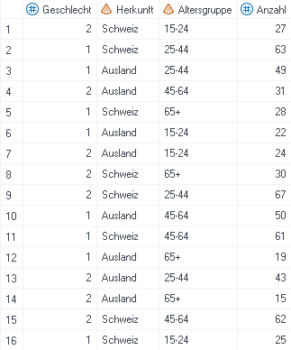
Zusammenfassungstabellen erstellen
Bei der ersten Anwendung muss die Anwendungsroutine Zusammenfassungstabelle zuerst gesucht werden (siehe Anleitung). Wurde sie schon verwendet oder sogar in den Favoriten gespeichert, dann ist sie direkt über die Leiste «Anwendungsroutinen» abrufbar.
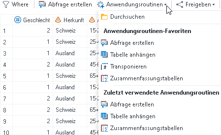
Als erstes werden die Variablen im Menüpunkt «Daten» den entsprechenden Rollen zugeordnet.
Analysevariablen:Diese Variablen werden analysiert, bspw. gezählt, aufsummiert oder gemittelt. In diesem Beispiel wird die Variable Anzahl aufsummiert.Klassifizierungsvariablen:Nach diesen Variablen wird die Analysevariable ausgewertet. In diesem Beispiel wird die Summe der Variable Anzahl nach den Variablen Geschlecht und Altersgruppe gebildet.Seiten:Pro Ausprägung dieser Variable wird eine Kreuztabelle generiert. Diese Variable wird automatisch auch unter Klassifizierungsvariablen gelistet. In diesem Beispiel wird pro Ausprägung der Variable Herkunft eine Tabelle erstellt.
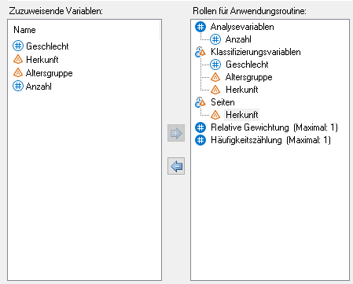
Danach wird im Menüpunkt «Zusammenfassungstabellen» die Struktur der Kreuztabelle mittels Drag and Drop festgelegt.
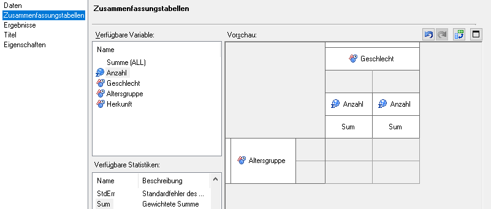
Im Menüpunkt «Ergebnisse» kann ein Häkchen gesetzt werden, wenn die Ergebnisse der Zusammenfassungstabelle auch in einem SAS-Datensatz gespeichert werden soll.
Im Menüpunkt «Titel» können ein Titel (bspw. Anzahl Personen nach Geschlecht, Altersgruppe und Herkunft) und eine Fussnote (in diesem Beispiel wird die Default-Fussnote verwendet) für die Tabelle definiert werden.
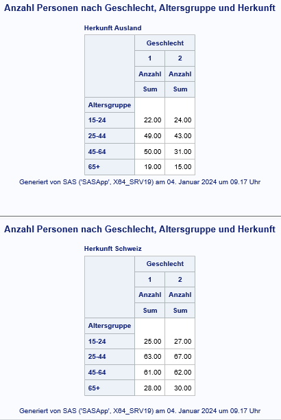
Zusammenfassungstabellen optimieren
Diese Tabellen können nun noch verschönert werden. Bspw. stören die Etiketten «Geschlecht», «Altersgruppen» und «Anzahl» sowie das Keyword Sum. Zudem wäre es schöner, wenn die Spalten zum Geschlecht beschriftet wären, anstatt nur den numerischen Wert der Variable zu enthalten. Die zwei Nachkommastellen sind zudem nicht sinnvoll, da es sich um die Anzahl Personen handelt.
- Etiketten entfernen:
Rechtsklick auf die jeweilige Überschrift -> Überschrifteneigenschaften -> Text bei Etikett: löschen
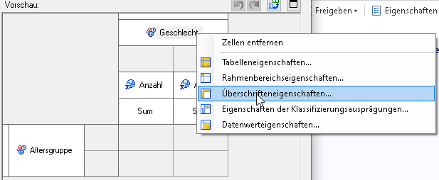 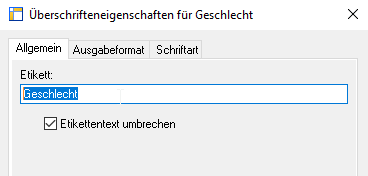
Die resultierende Kreuztabelle enthält keine Etiketten mehr und ist nun deutlich übersichtlicher. Der Einfachheit halber wird im Folgenden nur noch die Tabelle mit Herkunft «Ausland» gezeigt.
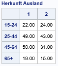 - Box beschriften:
Die leere Zelle oben links (Box) lässt sich ebenfalls beschriften.
Rechtsklick auf den grauen Bereich der Tabelle -> Rahmenbereichseigenschaften -> Etikett -> Folgenden Text verwenden
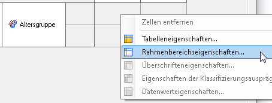
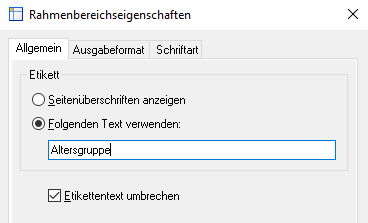
Die resultierende Tabelle sieht folgendermassen aus:
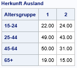 - Formate anwenden:
Die entsprechende Klassifizierungsvariable anwählen und rechts unter Überschriftformat das benutzerdefinierte Format auswählen.

Benutzerdefinierte Formate können auch verwendet werden, um in Zusammenfassungstabellen zu gruppieren (Anleitung), zu sortieren (Anleitung) oder Totale bzw. Subtotale zu bilden (Anleitung).